Game Structure
Fielding positions in cricket for a right-handed batsman
Fielding positions in cricket for a right-handed batsman
Test cricket is a game that spans over two innings. This means that one team needs to bowl the other
team out
twice and score more runs then them to win the match. Another key difference between test cricket and
other
forms of cricket is the length of the innings. In test cricket there is no limit to the innings length.
Whereas
in one day cricket & Twenty20 cricket there are a certain amount of overs per innings. The only limits
in test
cricket is a 5 day length. Before the game begins an official will toss a coin. The captain who guesses
the
correct side of the coin will then choose if they want to bat or field first. One team will then bat
while the
other will bowl & field. The aim of the batting team is to score runs while the aim of the fielding team
is to
bowl ten people out and close the batting teams’ innings. Although there are eleven people in each team
only ten
people need to be bowled out as you cannot have one person batting alone. Batting is done in pairs.
Once the first team has been bowled out the second team would then go into bat. Once the second team is
then
bowled out it would normally return to the first team batting again. However there is an exception to
this in
the cricket rules, it is called the follow-on. The follow-on is when the first team makes at least 200
runs more
than the second team made (in a 5 day test match). This then gives the first team the option to make the
second
team bat again. This is particularly useful if the game is progressing slowly or affected by bad weather
and
there might not be enough time for both teams to play a full innings. Should this be the case the
batting team’s
captain also has the right to forfeit their innings at any time. This is called a declaration. Some may
wonder
why a captain would forfeit the opportunity for his team to bat. However if the game is coming close to
a close
and it looks like they will not be able to bowl the other team out again this could be an option. If one
team is
not bowled out twice and a winner determined in the five days of play the game is declared a draw.
Therefore it
may be worth declaring an innings to creat the possibility of a win rather than a draw.
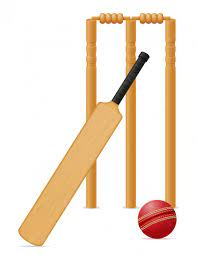
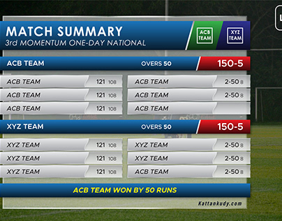
Ways to score runs
The aim of the batsmen is to score runs. One of the main cricket rules is that for batsmen to score runs
they
must run to each other’s end of the pitch (from one end to the other). In doing this one run is scored.
Cricket
rules state they may run multiple runs per shot. As well as running they can also score runs by hitting
boundaries. A boundary scores the batsmen either 4 or 6 runs. A four is scored by hitting the ball past
the
boundary after hitting the ground while a six is scored by hitting the ball past the boundary on the
full
(before it hits the ground). Cricket rules also state that once a 4 or 6 has been scored any runs
physically ran
by the batsman are null & void. They will only obtain the 4 or 6 runs.
Other ways runs can be scored according to the cricket rules include no balls, wide balls, byes & leg
byes.
Cricket rules state that all runs scored by these methods are awarded to the batting team but not the
individual
batters.
A
“No Ball”
can be declared for many reasons: If the bowler
bowls the ball from the wrong
place, the ball is declared dangerous (often happens when bowled at the batsmen’s body on the full),
bounces
more than twice or rolls before reaching the batsman or if fielders are standing in illegal positions.
The
batsman can hit a no ball and score runs off it but cannot be out from a no ball except if they are ran
out, hit
the ball twice, handle the ball or obstruct the field. The batsman gains any runs scored off the no ball
for his
shot while the team also gains one run for the no ball itself.
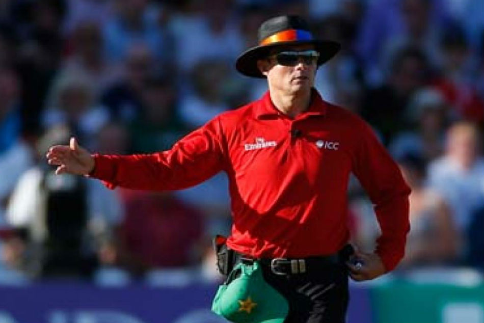
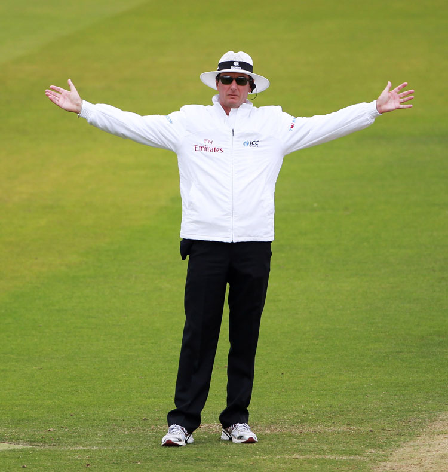
A
“Wide Ball”
will be declared if the umpire thinks the
batsman did not have a reasonable
opportunity to score off the delivery. However if the delivery is bowled over the batsmen’s head it will
not be
declared a wide but a no ball. Umpires are much stricter on wide deliveries in the shorter format of the
game
while being much more relaxed in test cricket. A wide delivery will add one run to the batting team and
any runs
scored by the batsman. The batsman is not able to get out off a wide delivery except if they are
stumped, run
out, handle the ball, hit their wicket or obstruct the field.
A
"Bye”
is where a ball that isn’t a no ball or wide passes the striking batsman
and runs
are scored without the batsman hitting the ball.
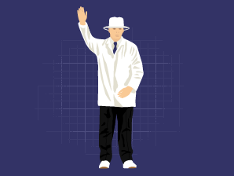
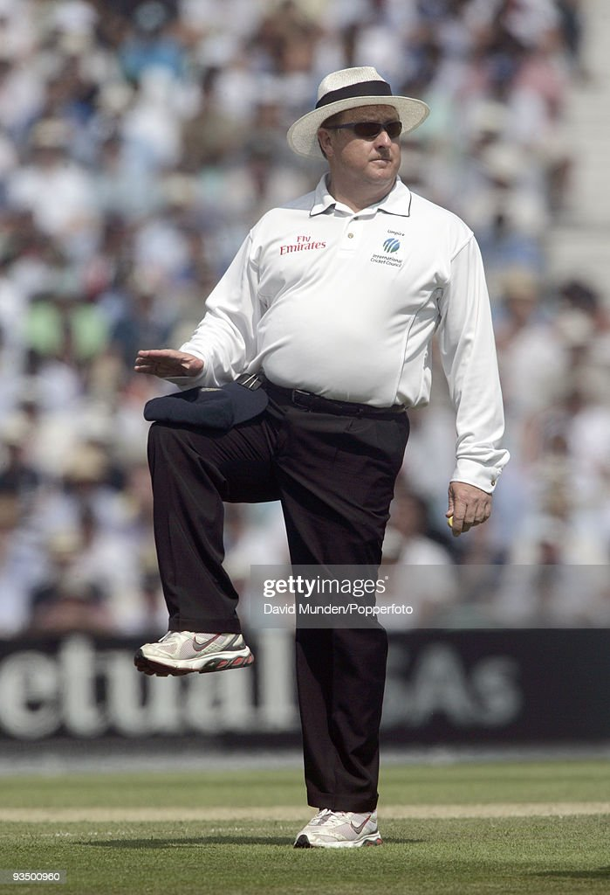
A
“Leg Bye”
is where runs are scored by hitting the batsman,
but not the bat and the ball
is not a no ball or wide. However no runs can be scored if the striking batsman didn’t attempt to play a
shot or
if he was avoiding the ball.
Ways Batsmen can be given out according to cricket rules
There are a number of different ways a batsman can be given out in the game of cricket. When a bowler
gets a
batsman out it is said that the bowler gets a “wicket”. Following are the different ways a batsman can
be given
out according to the rules of cricket:
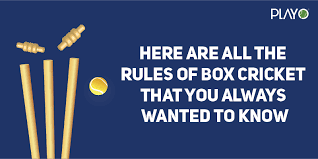
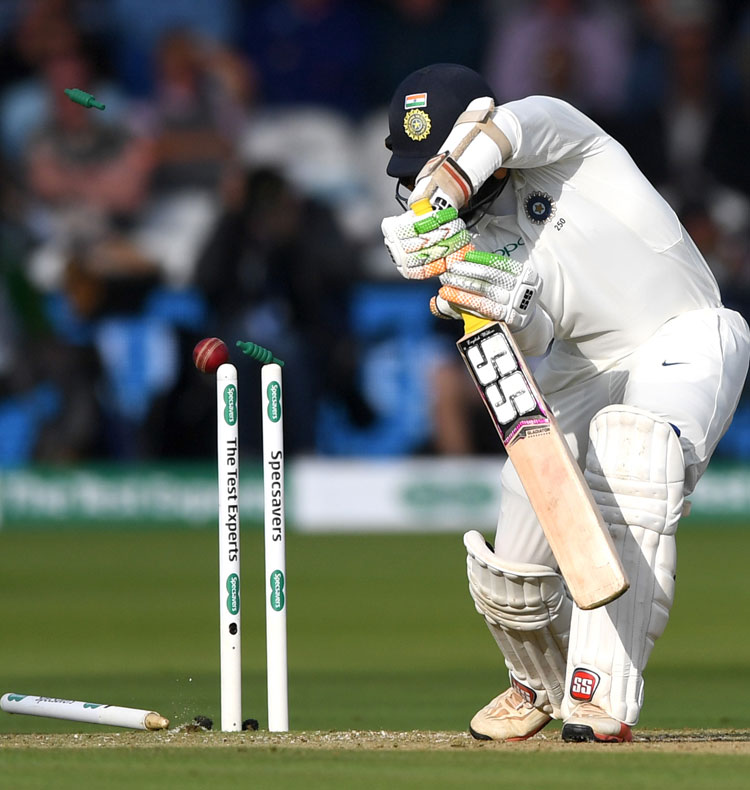
1: Bowled
Cricket rules state that if the ball is bowled and hits the striking
batsman’s
wickets the batsman is given out (as long as at least one bail is removed by the ball). It does not
matter
whether the ball has touched the batsman’s bat, gloves, body or any other part of the batsman. However
the ball
is not allowed to have touched another player or umpire before hitting the wickets.
2: Caught
Cricket rules state that if a batsman hits the ball or touches the ball
at all
with his bat or hand/glove holding the bat then the batsman can be caught out. This is done by the
fielders,
wicket keeper or bowler catching the ball on the full (before it bounces). If this is done then cricket
rules
state the batsman is out.
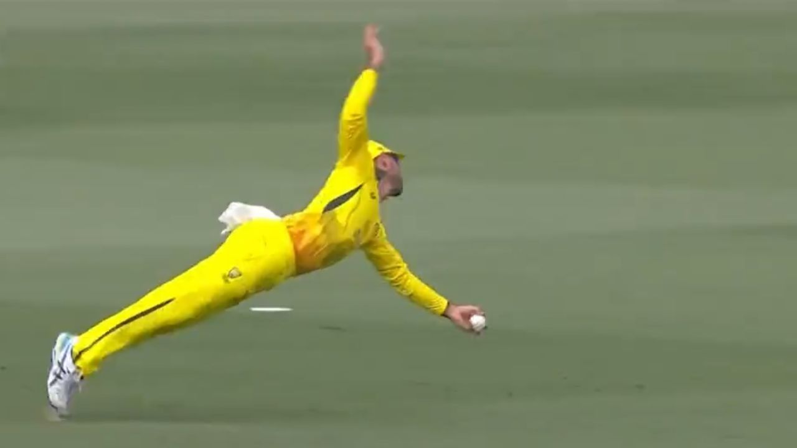
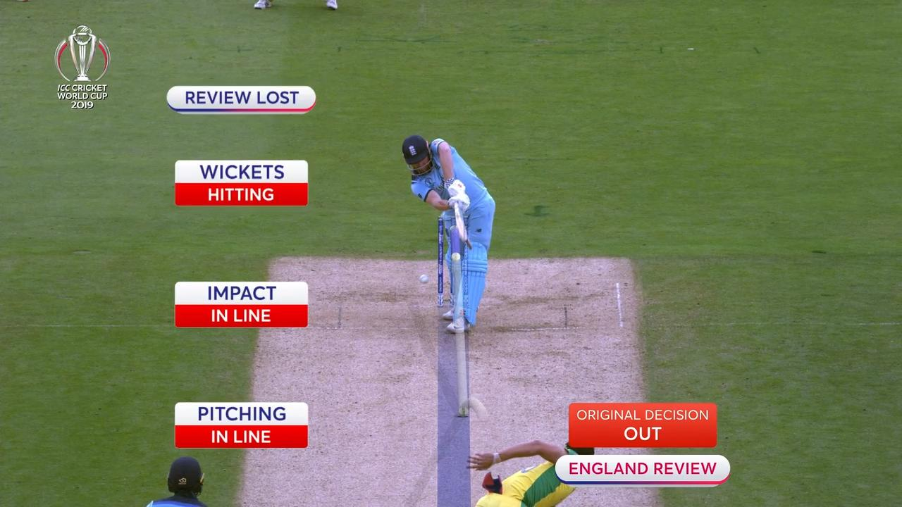
3: Leg Before Wicket (LBW)
If the ball is bowled and it hits the batsman first
without the
bat hitting it then an LBW decision is possible. However for the umpire to give this out he must first
look at
some of the factors stated in the cricket rules. The first thing the umpire need to decide is would the
ball
have hit the wickets if the batsman was not there. If his answer to this is yes and the ball was not
pitched on
the leg side of the wicket he can safely give the batsman out. However if the ball hits the batsman
outside the
line of off stump while he was attempting to play a stroke then he is not out.
4: Stumped
A batsman can be given out according to cricket rules when the
wicketkeeper
puts down his wicket while he is out of his crease and not attempting a run (if he is attempting a run
it would
be a runout).
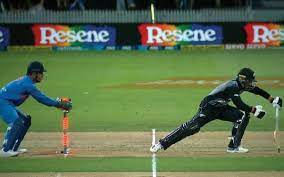
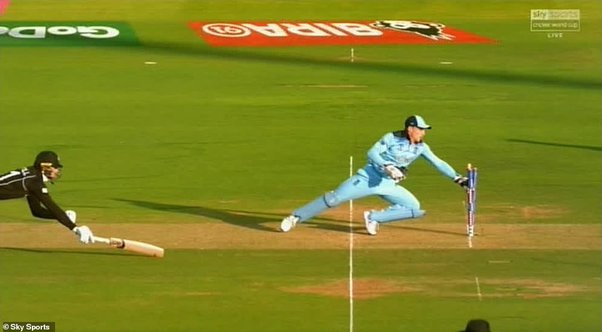
5: Run Out
Cricket rules state that a batsman is out if no part of his bat or
body is
grounded behind the popping crease while the ball is in play and the wicket is fairly put down by the
fielding
side.
6: Hit Wicket
Cricket rules specify that if a batsman hits his wicket down with
his bat
or body after the bowler has entered his delivery stried and the ball is in play then he is out. The
striking
batsman is also out if he hits his wicket down while setting off for his first run.
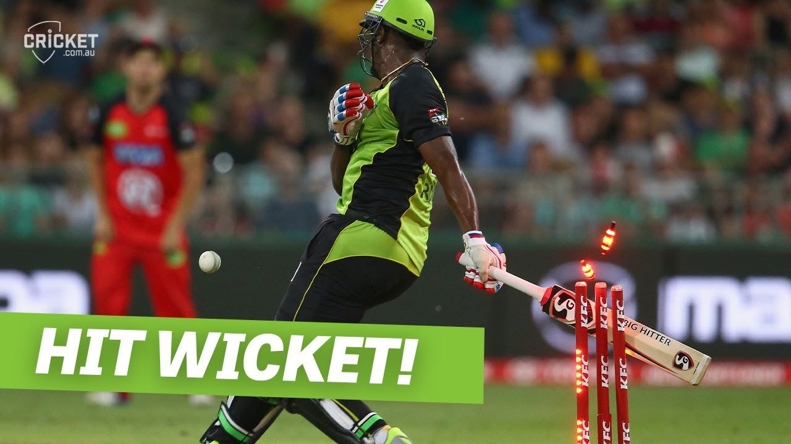
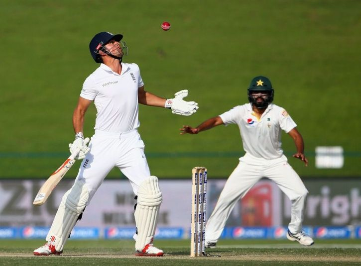
7: Handled The Ball
Cricket rules allow the batsman to be given out if he
willingly
handles the ball with the hand that is not touching the bat without the consent of the opposition.
8: Timed Out
An incoming batsman must be ready to face a ball or be at the non
strikers end
with his partner within three minutes of the outgoing batsman being dismissed. If this is not done the
incoming
batsman can be given out.
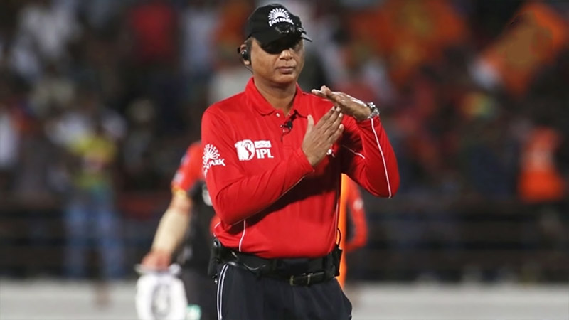
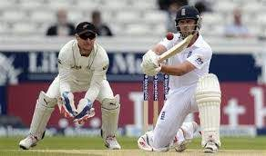
9: Hit The Ball Twice
Cricket rules state that if a batsman hits a ball twice
other
than
for the purpose of protecting his wicket or with consent from the opposition he is out.
10: Obstructing The Field
A batsman is out if he willingly obstructs the
opposition
by
word or action
There are many other cricket rules. However these are most of the basics and will get you well on your
way
to
playing the game. Many of the more advanced rules & laws can be learned along the way and are not vital
to
general play.
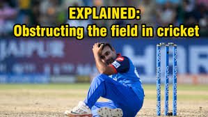